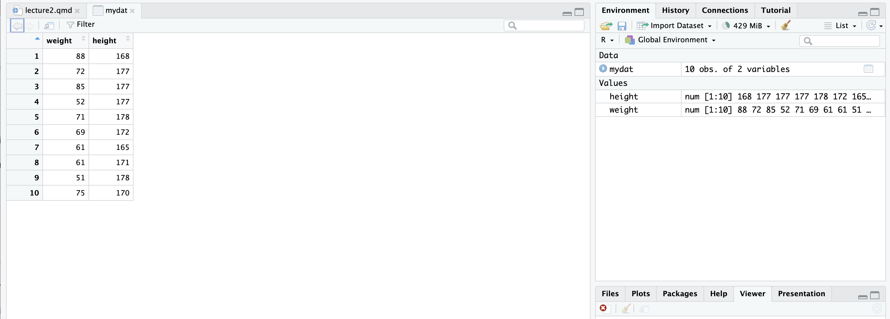
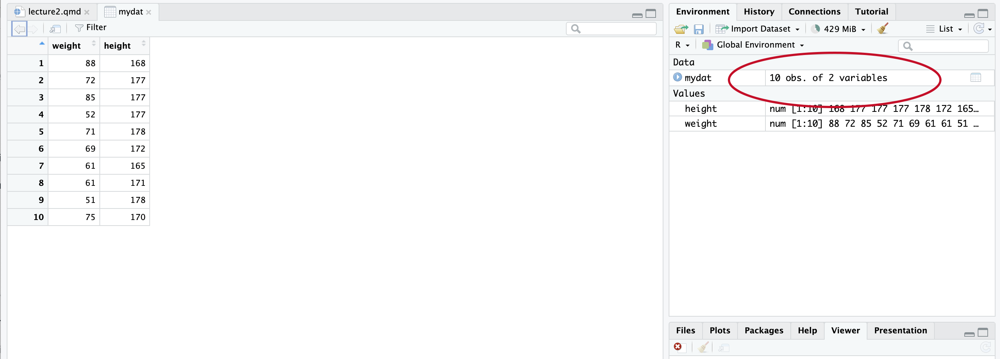

height weight bmi
[1,] 168 88 31.17914
[2,] 177 72 22.98190
[3,] 177 85 27.13141
[4,] 177 52 16.59804
[5,] 178 71 22.40879
[6,] 172 69 23.32342
[7,] 165 61 22.40588
[8,] 171 61 20.86112
[9,] 178 51 16.09645
[10,] 170 75 25.95156[1] TRUE height weight bmi
[1,] 168 88 31.17914
[2,] 177 72 22.98190
[3,] 177 85 27.13141
[4,] 177 52 16.59804
[5,] 178 71 22.40879
[6,] 172 69 23.32342
[7,] 165 61 22.40588
[8,] 171 61 20.86112
[9,] 178 51 16.09645
[10,] 170 75 25.95156[1] TRUE height weight bmi
[1,] 168 88 31.17914
[2,] 177 72 22.98190
[3,] 177 85 27.13141
[4,] 177 52 16.59804
[5,] 178 71 22.40879
[6,] 172 69 23.32342
[7,] 165 61 22.40588
[8,] 171 61 20.86112
[9,] 178 51 16.09645
[10,] 170 75 25.95156[1] TRUE[1] 10 3The matrix we just created can be turned into a dataframe.
Dataframes are essentially, list of vectors with names
The matrix we just created can be turned into a dataframe.
Dataframes are essentially, list of vectors with names
The matrix we just created can be turned into a dataframe.
Dataframes are essentially, list of vectors with names
The matrix we just created can be turned into a dataframe.
Dataframes are essentially, list of vectors with names
The matrix we just created can be turned into a dataframe.
Dataframes are essentially, list of vectors with names
# A tibble: 10 × 3
height weight bmi
<dbl> <dbl> <dbl>
1 168 88 31.2
2 177 72 23.0
3 177 85 27.1
4 177 52 16.6
5 178 71 22.4
6 172 69 23.3
7 165 61 22.4
8 171 61 20.9
9 178 51 16.1
10 170 75 26.0[1] "height" "weight" "bmi" Within a dataframe:
We can also create a dataframe manually in the following way:
We can also create a dataframe manually in the following way:
We view our dataframe(s) by clicking on the environment

We view our dataframe(s) by clicking on the environment

Some important dataframe properties include:
nrow - number of rowsncol - number of columnsdim - both the number of rows and columnsrownames - reveals the index numbers of the dataframecolnames - reveals the column namesHere is how they would work
Here is how they would work
Here is how they would work
Here is how they would work
Here is how they would work
[1] 10[1] 2[1] 10 2 [1] "1" "2" "3" "4" "5" "6" "7" "8" "9" "10"Here is how they would work
[1] 10[1] 2[1] 10 2 [1] "1" "2" "3" "4" "5" "6" "7" "8" "9" "10"[1] "weight" "height"These properties allow us to also make changes to the datafrane.
For example, we can change column names:
The glimpse command from dplyr allows us to see the dataframe effectively.
Rows: 10
Columns: 2
$ body_weight <dbl> 88, 72, 85, 52, 71, 69, 61, 61, 51, 75
$ height <dbl> 168, 177, 177, 177, 178, 172, 165, 171, 178, 170The $ operator is a shortcut for getting a single column, by name, from a data.frame:
Example:
head and tail allow us to see the beginning and the end of our dataframe
For example, the following command gives us the first 4 entries
The following command gives us the last 4 entries
The purpose of a conditional is execution of code
An if / else condition in R contains the following components
if keyword{ and })else keyword (optional){ and }) (optional)The conditional is evaluated to a logical vector containing either TRUE or FALSE if the condition is TRUE
If the condition is TRUE, the code after if is executed
If the condition is FALSE, the code after else is executed
Here is type of syntax without else
Here is type of syntax with else
Let us look at some examples:
Let us look at some examples:
Let us look at some examples:
Let us look at some examples:
What happens if the condition is false?
What happens if the condition is false?
What happens if the condition is false?
What happens if the condition is false?
What happens if the condition is false?
What happens if the condition is false?
Nothing happens
To have something printed, we would have have to add the else condition
To have something printed, we would have have to add the else condition
To have something printed, we would have have to add the else condition
To have something printed, we would have have to add the else condition
To have something printed, we would have have to add the else condition
[1] "x is negative or zero!"When the condition is FALSE, the second code section is executed instead.
We can have more than two conditions.
We should however create a function for that.
Objectives Write an R script that classifies a given number into one of three categories:
Let’s say the number is 3.
Instructions Use if-else statements to classify the number into one of the categories. The output should look like below:
[1] "The number is Positive"[1] "The number is Positive."Objective Write an R script that classifies a person into different age groups based on the following criteria:
Let’s say the age is is 15.
Instructions
Use if-else statements to classify the age into one of the age groups.
[1] "You are a Teenager."Objective Write an R script that classifies temperatures into different categories based on the following criteria:
Instructions 1. Use if-else statements to classify the temperature into one of the categories.
[1] "The temperature is Moderate."Popescu (JCU): Lecture 3